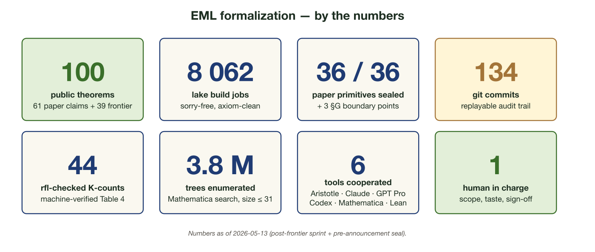
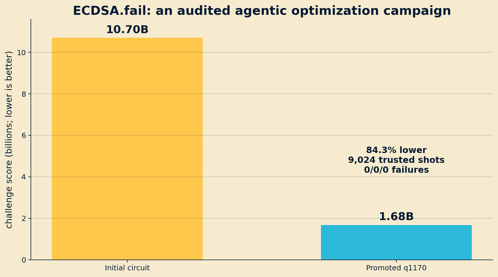
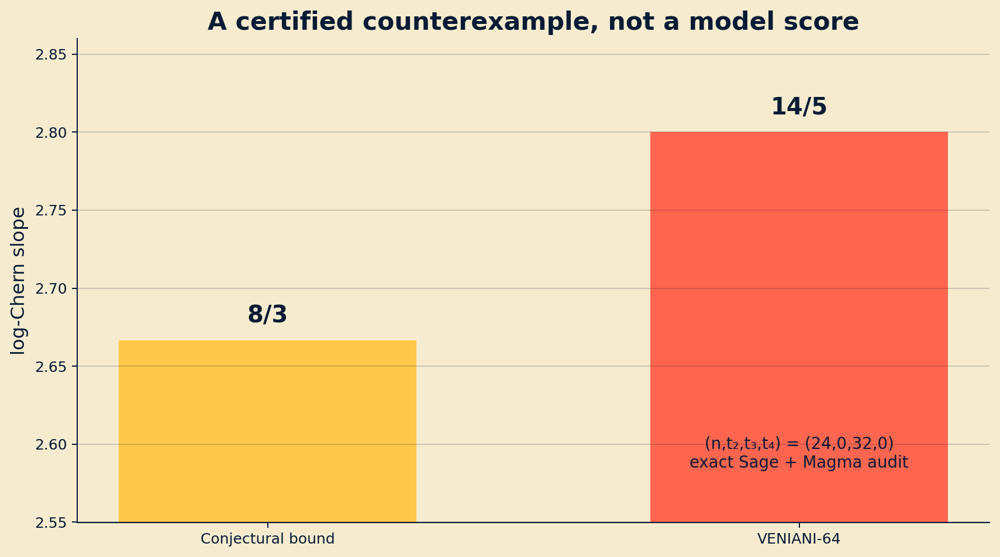

MIM UW · 22.06.2026
The
Mirages & Twists
of Mathematics
with AI
A technical judgement of what changed—and what did not.
Bartosz Naskręcki
Adam Mickiewicz University
Centre for Credible AI, WUT
Verdict
The capability jump is real.
The popular theory of it is not.
tool-using research loops work
proof assistants close real gaps
autonomy remains conditional
01Answer
candidate object
02Proof
checked argument
03Theorem
new result
04Theory
new structure
The frontier rises sharply from 1 to 4.
CAPABILITYErdős #728
unit distances
EVALUATIONFirstProof
FrontierMath v2
GOVERNANCELeiden
Declaration
88green full-resolution records
79unique Erdős problems
190unique primary problems listed
community wiki · commit 0f72fdb · audited 21.06.2026
1GPT Prostrategy
→
2AristotleLean proof
→
3Kerneltype checks
→
4Expertsratification
Proposal ≠ verification ≠ mathematical assessment.
arXiv:2601.07421
MATHEMATICSn1+δalgebraic number theory enters discrete geometry
EVIDENCE BAR- public proof record
- independent checks
- compute provenance
- ordinary review
provider-reported · expert-reviewed
semantic auditDoes 2 mean 1?
kernel auditDoes 3 inhabit 2?
1theorem and_symm (a b : Prop) :
2 a ∧ b → b ∧ a := by
3 intro h
4 exact ⟨h.right, h.left⟩
AFTER LINE 3
a b : Prop
h : a ∧ b
⊢ b ∧ a
after line 4no goals
artifacts/lean/MiragesLeanExamples/AndSymm.lean
artifacts/lean
$ lake build
Built MiragesLeanExamples.AndSymm
Built MiragesLeanExamples.DeMorgan
Built MiragesLeanExamples
Build completed successfully (5 jobs).
CERTIFIES- the formal statement
- the proof term
- declared dependencies
DOES NOT CERTIFY- the intended theorem
- natural assumptions
- novelty or importance
Trust the kernel. Audit the statement.
My EML project
A formalization factory,
not one generated proof.
36/36primitives
100theorems
0sorry/admit
8,062jobs

github.com/nasqret/eml-formalization
1catalogue→
2adversarial audit→
3repair→
4structure→
5replay
Independent review found:sorry · boundary abuse · broken bridges
RESULTcomplete classificationproduct intersection sets in semigroups
ARTIFACTkernel-checkedautonomously discovered and Lean-verified
RESPONSIBILITYhuman-ownedreview, exposition, publication
van Doorn · Monticone · Tang · arXiv:2604.18869
II
Agentic research
Not one brilliant prompt.
One controlled state machine.
planexecutetestcritiquecheckpoint
1×attempt
10×critics
100×tool loops
1,000×agents + memory
Report budget · retries · tools · human interventions.
ECDSA.fail · 14 June
Verified engineering,
not a cryptographic break.
1.678BQ × T score
- 1,170 peak qubits
- 1,434,070 Toffoli gates
- 9,024 trusted shots · 0 failures

nasqret · GPT-Codex · 84.3% below initial circuit
5pilotmanual calibration
18autonomousstateful search
28follow-upexact Magma checks
= 51 accepted pairs
Ongoing competition. Aggregate counts only.
With Piotr Pokora · exact characteristic 0
A new Chern-slope record.
x₀⁴ − x₀x₁³ − x₂⁴ + x₂x₃³ = 0
14/5 > 8/3
(24,0,32,0)c̄₁²=112c̄₂=40G=208

finite-field search → QQ̄ reconstruction → Sage + Magma certificates
DISCOVERYGröbner basesexact reconstruction · 800 conics · machine-audited cases
→
EXPOSITIONstructural lemmascompressed argument · independent reading · no computer dependency
github.com/nasqret/quadrics
ALETHEIA · FIRSTPROOF6 / 10majority expert acceptance
raw prompts + outputs · small sample · best-of-two
AI CO-MATHEMATICIANworkbenchstate + tools + failed hypotheses
architecture closer to research than one-turn scoring
arXiv:2602.21201 · arXiv:2605.06651
FULL SET338problems
TIER 443private problems
ADDRESSED42%errors or revisions
v1 scoresaudit12 corrected7 removedv2 scores pending
Epoch AI · benchmark-owner report
01task + version
02budget + tools
03retries + humans
04errors + exclusions
05raw traces
Version the benchmark—not only the model.
One instructor can now maintain a coherent course ecosystem.
SPECIFYexact claim + evidence bar
SEARCHvariants + literature + computation
CHECKkernel + CAS + independent tool
CRITIQUEisolated second reviewer
PUBLISHartifact + budget + failure trace
STRONGERexact computation
proof search
counterexamples
known-technique recombination
STILL HARDchoose the representation
sustain strategy
invent abstractions
know what matters
Creativity
The bottleneck is
new representation.
search variants→compose tools→invent the invariant
World models, latent reasoning, and better memory may help. That is a research agenda—not today’s result.
OPENarguments + infrastructure
DISCLOSEtools + compute
OWNhuman credit + responsibility
ACCESScapability must not decide voice
leidendeclaration.ai · 02.06.2026
NOWagent workbenches
6 MOpaper-to-Lean pipelines
12 MOshared research state
24 MOselective theory gains
Not general autonomous theory building.
Discussion
Delegate search.
Retain judgement.
Publish the trace.
The question is which mathematical responsibilities we automate—and how we know the result deserves trust.